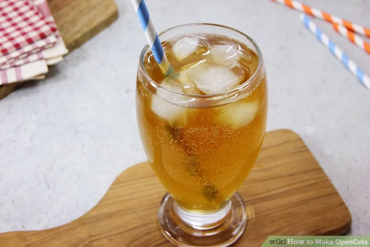

How to make Cocacola
Home

Description
Coca-Cola is a carbonated soft drink that is sweetened and sold in bottles and cans. It is the world's best-selling soda.
Thearmacist John Stith Pemberton invented the first soft drink in the world in Atlanta, Georgia. This soft drink was derived from cocaine and caffeine which acted as a pain reliever and a stimulant to be used as a health tonic. This tonic was later named Coca-Cola
This is a non-copyrighted variation of Cocacola. This delicious recipe is quick and easy to make and has a similar taste to Coca-Cola
Ingredients
- 3.5 millilitres (0.71 tsp) of orange oil
- 1 millilitre (0.20 tsp) of lemon oil
- 1 millilitre (0.20 tsp) of nutmeg oil
- 1.25 millilitres (0.25 tsp) of cassia (cinnamon) oil
- 0.25 millilitres (0.051 tsp) of coriander oil
- 0.25 millilitres (0.051 tsp) of neroli oil
- 2.75 millilitres (0.56 tsp) of lime oil
- 0.25 millilitres (0.051 tsp) of lavender oil
- 10 grams (0.35 oz) of food-grade gum arabic
- 3 millilitres (0.61 tsp) of water
- 17.5 ml (3.5 tsp) of 75% citric acid or phosphoric acid
- 2.28 litres (9.6 c) of water
- 2.36 kilograms (5.2 lb) of granulated white sugar
- 0.5 millilitres (0.10 tsp) of caffeine (optional)
- 30 millilitres (6.1 tsp) of caramel color (optional)
Steps
- Mix the essential oils and 3 mL (0.61 tsp) of water in a small bowl.
- Add sugar, water, citric acid, caffeine, caramel colour, and flavouring to a blender.
- Measure 10 g (0.35 oz) of food-grade gum arabic into the blender.
- Blend the ingredients for 2 minutes.
- Pour the syrup and soda water into a glass at a 1:5 ratio.
- Stir the syrup and soda water with a spoon.
- Add ice to the drink or enjoy it on its own.